| 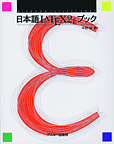 | 日本語 LaTeX2e ブック （正誤表, 索引） [詳細] |
| 中野 賢 著 | |
| アスキー・メディアワークス | |
| ISBN4-7561-1667-1 | |
| 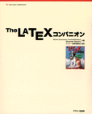 | The LaTeX コンパニオン [詳細] |
| Michel Goossens、Frank Mittelbech、Alexander Samarin著/アスキー書籍編集部監訳 | |
| アスキー・メディアワークス | |
| ISBN4-7561-1813-5 | |
| 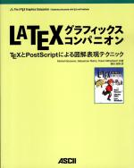 | The LaTeX グラフィックス コンパニオン [詳細] |
| Michel Goossens、Sebastian Rahtz、Frank Mittelbach著/鷺谷好輝訳 | |
| アスキー・メディアワークス | |
| ISBN4-7561-3461-0 | |
| The LaTeX Web コンパニオン [詳細] | |
| Michel Goossens、Sebastian Rahtz著、鷺谷好輝 訳 | |
| アスキー・メディアワークス | |
| ISBN4-7561-3973-6 | |
| 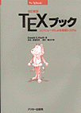 | 改訂新版 TeX ブック [詳細] |
| Donald Knuth 著/斉藤 信男 監修/鷺谷 好輝 訳 | |
| アスキー・メディアワークス | |
| ISBN4-7561-0120-8 | |
| 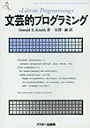 | 文芸的プログラミング [詳細] |
| Donald Knuth 著/有澤 誠 監訳 | |
| アスキー・メディアワークス | |
| ISBN4-7561-0190-9 | |
| 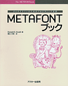 | METAFONT ブック [詳細] |
| Donald Knuth 著/鷺谷 好輝 訳 | |
| アスキー・メディアワークス | |
| ISBN4-7561-0194-1 | |
| 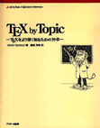 | TeX by Topic [詳細] |
| Victor Eijkhout 著/富樫 秀昭 訳 | |
| アスキー・メディアワークス | |
| ISBN4-7561-3067-4 | |
| 日本語 TeX テクニカルブック I | |
| アスキー出版技術部 責任編集 | |
| アスキー・メディアワークス | |
| ISBN4-7561-0405-3 | |
| 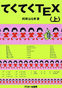 | てくてく TeX 上 |
| 阿瀬 はる美 著 | |
| アスキー・メディアワークス | |
| ISBN4-7561-0222-0 | |
| 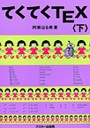 | てくてく TeX 下 |
| 阿瀬 はる美 著 | |
| アスキー・メディアワークス | |
| ISBN4-7561-0223-9 | |
| 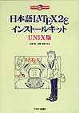 | 日本語 LaTeX2e インストールキット UNIX版 （関連情報） [詳細] |
| 中野 賢、富樫 秀昭 共著 | |
| アスキー・メディアワークス | |
| ISBN4-7561-3099-2 | |
| 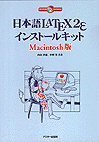 | 日本語 LaTeX2e インストールキット Macintosh版 （関連情報） [詳細] |
| 内山 孝憲、中野 賢 共著 | |
| アスキー・メディアワークス | |
| ISBN4-7561-3100-X | |
| 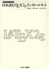 | 日本語 LaTeX2e インストールキット （関連情報） [詳細] |
| 中野 賢、淺山 和典、内山 孝憲 共著 | |
| アスキー・メディアワークス | |
| ISBN4-7561-1942-5 | |